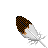
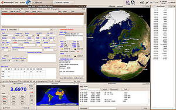

CQRLOG
Dieser Artikel wurde für die folgenden Ubuntu-Versionen getestet:
Ubuntu 14.04 Trusty Tahr
Zum Verständnis dieses Artikels sind folgende Seiten hilfreich:

CQRLOG  ist ein Logbuch-Programm für Amateurfunker. Es besitzt Anbindung an einen Transceiver über die hamlib-Bibliothek, die momentan über 140 Radiotypen und -modelle unterstützt. CQRLOG bietet Unterstützung für die Erstellung von QSL-Karten, digitale Modi (z.B. über fldigi ), LoTW , eQSL und DX-Cluster. CQRLOG bringt Unterstützung für das weit verbreitete Standard-Format ADIF für Logbücher.
ist ein Logbuch-Programm für Amateurfunker. Es besitzt Anbindung an einen Transceiver über die hamlib-Bibliothek, die momentan über 140 Radiotypen und -modelle unterstützt. CQRLOG bietet Unterstützung für die Erstellung von QSL-Karten, digitale Modi (z.B. über fldigi ), LoTW , eQSL und DX-Cluster. CQRLOG bringt Unterstützung für das weit verbreitete Standard-Format ADIF für Logbücher.
Das Programm bietet sehr viele Funktionen und muss nicht unbedingt für jeden Funker geeignet sein. Wer einen simplen Logger ohne viel Zusatzfunktionalität benötigt, kann stattdessen auch auf xlog oder Ähnliches zurückgreifen.
Vorbereitung¶
Soll ein an den Computer angeschlossener Transceiver Frequenzen, Betriebsart etc. auslesen und beim Loggen automatisch eintragen lassen, wird die Installation der hamlib-Bibliothek vorausgesetzt, die über ein Paket eingerichtet[1] wird:
libhamlib2 (universe)
 mit apturl
mit apturl
Paketliste zum Kopieren:
sudo apt-get install libhamlib2
sudo aptitude install libhamlib2
Installation¶
Die Installation kann über die offiziellen Paketquellen erfolgen [1]:
cqrlog (universe)
mit apturl
Paketliste zum Kopieren:
sudo apt-get install cqrlog
sudo aptitude install cqrlog
PPA¶
Die aktuelle Version kann aus einem "Personal Packages Archiv" (PPA) [2] installiert werden.
Adresszeile zum Hinzufügen des PPAs:
ppa:ok2cqr/ppa
Hinweis!
Zusätzliche Fremdquellen können das System gefährden.
Ein PPA unterstützt nicht zwangsläufig alle Ubuntu-Versionen. Weitere Informationen sind der  PPA-Beschreibung des Eigentümers/Teams ok2cqr zu entnehmen.
PPA-Beschreibung des Eigentümers/Teams ok2cqr zu entnehmen.
Damit Pakete aus dem PPA genutzt werden können, müssen die Paketquellen neu eingelesen werden.
Nach dem Aktualisieren der Paketquellen erfolgt die Installation wie oben angegeben.
Einrichtung¶
Das Programm kann als cqrlog gestartet werden [3]. Über den Menü-Eintrag "File -> Preferences" sollten zuerst alle benötigten Einstellungen vorgenommen werden. Im Folgenden soll kurz auf einige Einstellungen eingegangen werden:

Station: In dieser Registerkarte sollten unbedingt Rufzeichen (Call) und Locator eingetragen werden, dadurch können Distanz und andere Daten korrekt berechnet werden.
New QSO: Hier werden die Werte festgelegt, welche für die QSOs standardmäßig eingetragen werden sollen. "Enable auto search on QRZ.com" ermöglicht automatischen Abgleich mit den Daten mit QRZ.com
TRX control: Der verwendete Transceiver wird festgelegt. Unter "Device" muss der Pfad zur Gerätedatei angegeben werden. Wird die serielle Schnittstelle (RS232) verwendet, ist dies /dev/ttyS0. Mit einem USB-Adapter für diese Schnittstelle ist es /dev/ttyUSB0. Das "RIG ID model" für den benutzten Transceiver kann z.B. in der Dokumentation
von CQRLOG nachgeschlagen werden. Hier muss nun die Nummer, die sich in der ersten Spalte der Liste befindet, eingetragen werden. Über einen Klick auf "Settings" müssen evtl. noch die Geschwindigkeit, Parität u.a. eingetragen werden. Informationen zu diesen Angaben entnimmt man dem Handbuch des Transceivers.
Mit xplanet kann man dreidimensionale Karten mit den Standorten der QSOs oder Calls vom DX-Cluster anzeigen lassen.
Nutzung¶
Das Eintragen von QSOs ist selbsterklärend. Unter "Call" im Hauptfenster wird das Rufzeichen eingetragen und z.B. mit der Tabulator-Taste Tab ⇆ ins nächste Feld gewechselt. Dadurch werden auch die Daten von QRZ.com abgeglichen. Abgespeichert wird der Logbuch-Eintrag über die Eingabetaste oder die Schaltfläche "Save QSO".
Das eigentliche Logbuch lässt sich über die Tastenkombination Strg + O oder den Menüeintrag "File -> Show QSO list" einsehen.
QSL-Karten-Druck¶
Möchte man QSL-Karten automatisch ausfüllen und drucken lassen, so lässt sich dies mit CQRLOG machen. Dazu wird zuerst das Programm gLabels für die korrekten Maße der Labels benötigt. Wie die jeweiligen Variablen zu setzen sind, entnimmt man der CQRLOG-Dokumentation . Es muss also ein passendes Etikett für die verwendeten QSL-Karten mit gLabels erstellt und abgespeichert werden.
In CQRLOG öffnet man nun die QSO-Liste mit der Tastenkombination ( Strg + O ) und wählt den Menü-Eintrag QSL -> Export for label printing. Hier wählt man die gewünschten Optionen aus und klickt auf "Export". Als Ergebnis wird im festgelegten Pfad eine CSV-Datei mit den QSO-Rohdaten erstellt, die von gLabels verarbeitet werden kann.
Eine zu druckende PDF-Datei kann man nun z.B. im Terminal[5] erzeugen:
glabels-batch -i ~/cqrlog_Verzeichnis/log_data/qsl.csv -o ~/labels.pdf ~/Pfad/zu/Etikett.glabels
Die Pfade zur .csv- und .glabels-Datei müssen vor dem Ausführen angepasst werden.
 Übersichtsartikel
Übersichtsartikel- Erstellt mit Inyoka
-
 2004 – 2017 ubuntuusers.de • Einige Rechte vorbehalten
2004 – 2017 ubuntuusers.de • Einige Rechte vorbehalten
Lizenz • Kontakt • Datenschutz • Impressum • Serverstatus -
Serverhousing gespendet von